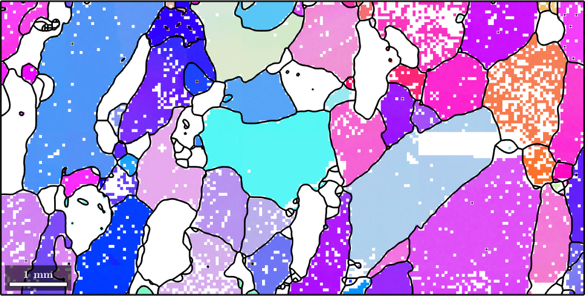
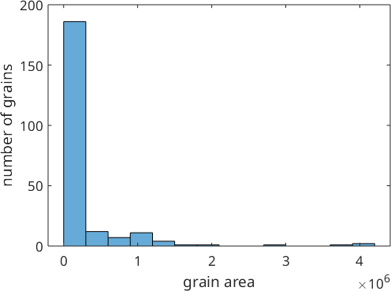
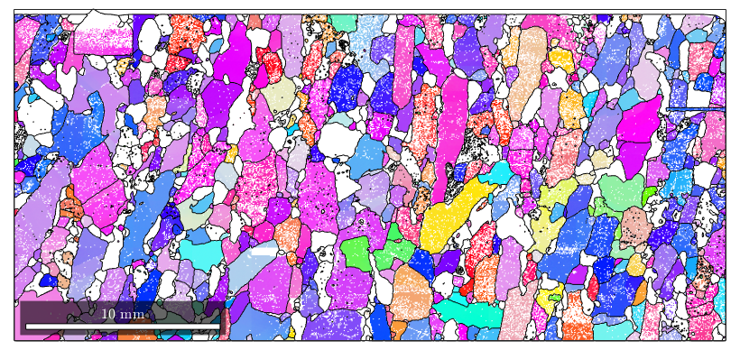
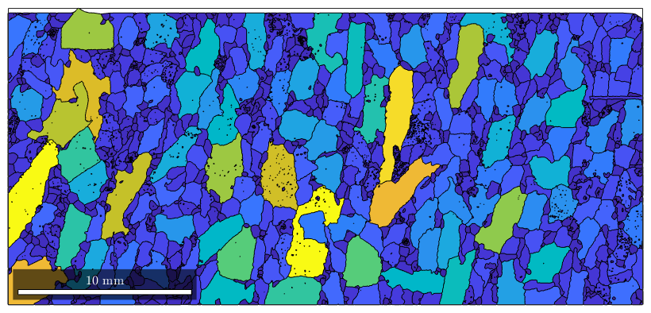
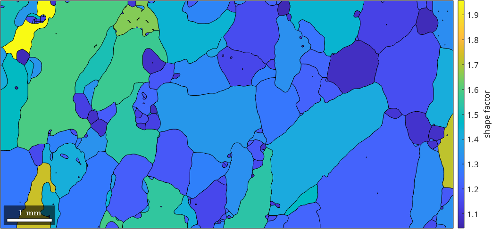
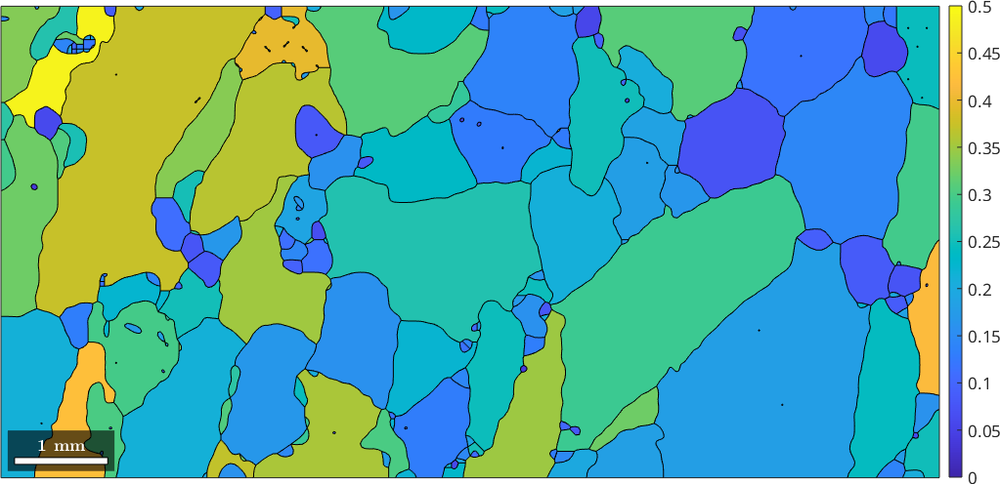

First Steps and Function Overview
Get in touch with grains.
Grain reconstruction from EBSD data
So far grains can be exclusively computed from EBSD data using the command calcGrains. In order to demonstrate grain reconstruction we import some EBSD data
mtexdata forsterite plotx2east % plot the Forsterite phase colorized according to orientation plot(ebsd('fo'),ebsd('fo').orientations)
When reconstructing grain there are two basic ways how to deal with not indexed measurements. The simplest way is to keep the not indexed pixels separately, i.e., do not assign them to any indexed grain.
[grains, ebsd.grainId] = calcGrains(ebsd,'angle',5*degree)
grains = grain2d
Phase Grains Pixels Mineral Symmetry Crystal reference frame
0 16334 58485 notIndexed
1 4331 152345 Forsterite mmm
2 1866 26058 Enstatite mmm
3 2012 9064 Diopside 12/m1 X||a*, Y||b*, Z||c
boundary segments: 148741
triple points: 12065
Properties: GOS, meanRotation
ebsd = EBSD
Phase Orientations Mineral Color Symmetry Crystal reference frame
0 58485 (24%) notIndexed
1 152345 (62%) Forsterite light blue mmm
2 26058 (11%) Enstatite light green mmm
3 9064 (3.7%) Diopside light red 12/m1 X||a*, Y||b*, Z||c
Properties: bands, bc, bs, error, mad, x, y, grainId
Scan unit : um
We observe that there are not only grains of specific phases but also not indexed grains. Let's add the grain boundaries to the previous plot.
hold on plot(grains.boundary) hold off
The resulting grains contain a lot of holes and one-pixel grains. The second way is to assign not indexed pixels to surrounding grains. In MTEX this is done if the not indexed data are removed from the measurements, i.e.
ebsd = ebsd('indexed') % this removes all not indexed data [grains, ebsd.grainId] = calcGrains(ebsd,'angle',5*degree)
ebsd = EBSD
Phase Orientations Mineral Color Symmetry Crystal reference frame
1 152345 (81%) Forsterite light blue mmm
2 26058 (14%) Enstatite light green mmm
3 9064 (4.8%) Diopside light red 12/m1 X||a*, Y||b*, Z||c
Properties: bands, bc, bs, error, mad, x, y, grainId
Scan unit : um
grains = grain2d
Phase Grains Pixels Mineral Symmetry Crystal reference frame
1 1256 152345 Forsterite mmm
2 518 26058 Enstatite mmm
3 1526 9064 Diopside 12/m1 X||a*, Y||b*, Z||c
boundary segments: 45832
triple points: 3863
Properties: GOS, meanRotation
ebsd = EBSD
Phase Orientations Mineral Color Symmetry Crystal reference frame
1 152345 (81%) Forsterite light blue mmm
2 26058 (14%) Enstatite light green mmm
3 9064 (4.8%) Diopside light red 12/m1 X||a*, Y||b*, Z||c
Properties: bands, bc, bs, error, mad, x, y, grainId
Scan unit : um
Now, there are no not indexed grains computed. Let's visualize the result
% plot the orientation data of the Forsterite phase plot(ebsd('fo'),ebsd('fo').orientations) % plot the grain boundary on top of it hold on plot(grains.boundary) hold off % smooth the grains grains = smooth(grains); % plot the orientation data of the Forsterite phase plot(ebsd('fo'),ebsd('fo').orientations) % plot the grain boundary on top of it hold on plot(grains.boundary) hold off
Area, Perimeter, Diameter
Holes
Neighbours
Fitted Ellipse
Convexity
pari
Grain properties
Grains are stored as a long list of several properties. Please find below a table of most of the properties that are stored or can be computed for grains
|
grain area in square grains.scanUnit |
|
|
grain length / grain width |
|
|
list of boundary segments |
|
|
number of boundary segments |
|
|
area difference between grain and its convex hull |
|
|
x,y coordinates of the barycenter of the grain |
|
|
grains.CS |
crystal symmetry (single phase only) |
|
diameter in grains.scanUnit |
|
|
the perimeter of the fitted ellipse |
|
|
the radius of the fitted ellipse |
|
|
grains.GOS |
grain orientation spread |
|
grains.grainSize |
number of measurements per grain |
|
check for inclusions |
|
|
grains.id |
grain id |
|
list of inner boundary segments |
|
|
grains.meanOrientation |
meanOrientation (single phase only) |
|
grains.mineral |
mineral name (single phase only) |
|
number and ids of neighboring grains |
|
|
grains.phase |
phase identifier |
|
perimeter in grains.scanUnit |
|
|
length and width of the fitted ellipse |
|
|
quotient perimeter / perimeter of the fitted ellipse |
|
|
list of triple points |
|
|
grains.x |
x coordinates of the vertices |
|
grains.y |
y coordinates of the vertices |
Those grain properties can be used for colorization. E.g. we may colorize grains according to their area.
plot(grains,grains.area)
or a little bit more advanced according to the log quotient between grain size and boundary size.
plot(grains,log(grains.grainSize ./ grains.boundarySize)) mtexColorbar
Note that some properties are available for single phase lists of grains, e.g.
% colorize the Forsterite Phase according to its mean orientation plot(grains('Fo'),grains('Fo').meanOrientation)
I'm going to colorize the orientation data with the standard MTEX colorkey. To view the colorkey do: oM = ipfColorKey(ori_variable_name) plot(oM)
Changing lists of grains
As with any list in MTEX, one can single out specific grains by conditions using the syntax
% this gives all grains with more the 1000 pixels largeGrains = grains(grains.grainSize > 1000) hold on % mark only large Forsterite grains plot(largeGrains('Fo').boundary,'linewidth',2,'linecolor','k') hold off
largeGrains = grain2d
Phase Grains Pixels Mineral Symmetry Crystal reference frame
1 37 58902 Forsterite mmm
2 1 1038 Enstatite mmm
boundary segments: 10886
triple points: 816
Properties: GOS, meanRotation